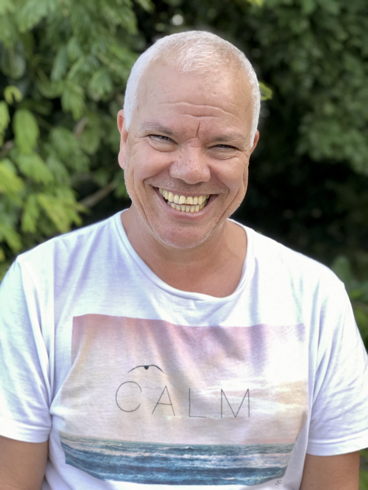

Perfil
Por Clara Espíndola
Vozes de Piratininga
Trabalho de Conclusão de Curso
Perfis de gente comum e apaixonada.
Todas as pessoas são atravessadas por histórias, sejam elas boas ou ruins, e são essas histórias que guiam o meu projeto. Esse site tem como foco apresentar meu Trabalho de Conclusão de Curso. Vozes de Piratininga: Perfis de Gente Comum e Apaixonada é um produto jornalístico digital que reúne sete textos do gênero perfil, de moradores apaixonados por Piratininga, sendo um deles do meu pai, que faleceu no meu primeiro dia de aula na Faculdade de Jornalismo.
Piratininga é um bairro localizado na Região Oceânica de Niterói, Rio de Janeiro. A escolha dessa região para delimitar este trabalho surgiu a partir de um questionamento existente desde que comecei a pensar no meu TCC: como homenagear meu pai, a partir da relação afetiva dele com Piratininga? Meu pai nasceu, cresceu e morreu neste bairro. E, a partir desse querer, surgiu uma ideia ainda melhor e mais abrangente para honrar não somente a memória dele ele, mas também a de Piratininga: reunir outras pessoas que, assim como ele, são apaixonadas por esse lugar, e dar a esse pessoal uma visibilidade que, muitas vezes, não está presente no jornalismo factual atual.
Ao reunir essas pessoas de uma região delimitada e trazer relatos pessoais, criados a base de observação e de uma escuta cuidadosa e atenta, esse projeto se torna um grande instrumento para, através do jornalismo, fortalecer a construção de uma memória local para esse grupo de pessoas de Piratininga.
Para além do caráter jornalístico e social, esse projeto também traz uma importante contribuição afetiva para mim, uma vez que resgata a memória do meu pai e aprofunda o meu vínculo/relação com o local que ele mais amava.

Histórias de quem vive a lagoa e o mar.

1965 - 2021
Trabalho de Conclusão de Curso em Jornalismo na Universidade Federal Fluminense - UFF